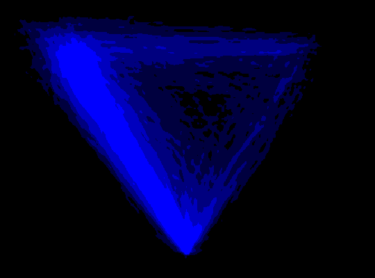

mt_heatmap plots high resolution raw trajectory maps. Note that this
function has beta status.
mt_heatmap(x, use = "trajectories", dimensions = c("xpos", "ypos"), filename = NULL, ..., upscale = 1, plot_dims = FALSE, verbose = TRUE)
| x | usually an object of class |
|---|---|
| use | a character string specifying which trajectory data should be used. |
| dimensions | a character vector specifying the trajectory variables used to create the heatmap. The first two entries are used as x and y-coordinates, the third, if provided, will be added as color information. |
| filename | a character string giving the name of the file. If
|
| ... | arguments passed to mt_heatmap_raw. |
| upscale | a numeric value by which the output resolution of the image is increased or decreased. Only applies if device is one of tiff, png, or pdf. |
| plot_dims | adds the coordinates of the four image corners to the plot.
Helps setting |
| verbose | logical indicating whether function should report its progress. |
mt_heatmap wraps mt_heatmap_raw and provides direct plotting
output in tiff, png,
pdf, or R's default window output. For further details on
how the trajectory heatmaps are constructed, see mt_heatmap_raw.
mt_heatmap_ggplot for plotting a trajectory heatmap using ggplot2.
mt_diffmap for plotting trajectory difference-heatmaps.
mt_heatmap(KH2017, xres=500, n_shades=5,mean_image=0.2)#> spatializing trajectories #> calculate image #> smooth image #> enhance image by 26.5 #> creating heatmap: 500 x 308 px#> heatmap created in 1s